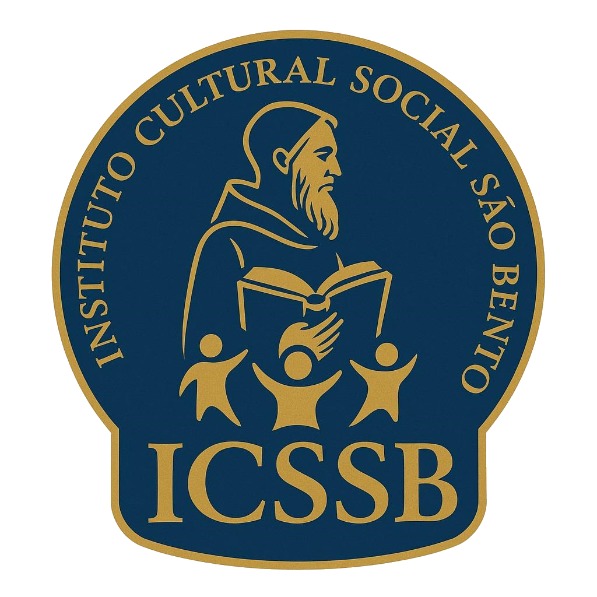

Brasília • Ceilândia • Cultura, cidadania e ação comunitária
Em Ceilândia, cultura, educação e ação social caminham juntas.
O Instituto Cultural Social São Bento nasceu para estar perto da comunidade. Sua atuação reúne ações sociais, culturais, educativas e esportivas que fortalecem vínculos, ampliam oportunidades e valorizam a vida coletiva no território.

Compromisso institucional
Uma presença construída com escuta, continuidade e vínculo comunitário.
O ICSSB entende que transformação social não acontece de forma isolada. Ela nasce do trabalho cotidiano, do acesso à cultura, da formação, do esporte e da articulação com a comunidade.
Quem somos
Uma instituição que atua a partir do território e das pessoas.
Fundado em 2015, o Instituto Cultural Social São Bento é uma associação privada sem fins lucrativos sediada em Ceilândia, no Distrito Federal. Sua missão é desenvolver ações sociais, culturais e educativas que fortaleçam direitos, ampliem oportunidades e contribuam para uma comunidade mais participativa, acolhedora e consciente.
Acreditamos em uma atuação que aproxima, acolhe e mobiliza. Para o ICSSB, cultura, educação e ação social são ferramentas concretas de dignidade, pertencimento e transformação.
Atuação
Nossa atuação integra cultura, formação e fortalecimento comunitário.
O trabalho do Instituto parte da compreensão de que desenvolvimento social depende de acesso, convivência e participação. Por isso, suas frentes dialogam entre si e respondem às necessidades reais do território.
Defesa de direitos e cidadania
Formação educativa e comunitária
Arte, música e dança
Projetos culturais e artísticos
Práticas esportivas e convivência
Ações comunitárias e educativas
Projetos
Projetos que conectam cuidado, formação e participação social.
Esta seção apresenta as iniciativas desenvolvidas pelo Instituto e organiza, de forma clara, o que fazemos, para quem fazemos e qual impacto buscamos gerar em Ceilândia e no Distrito Federal.
Projetos culturais e artísticos
Iniciativas que valorizam expressão, identidade, arte e pertencimento como ferramentas de formação e transformação social.
Eventos esportivos e culturais
Ações que articulam esporte, cultura e participação coletiva, fortalecendo convivência, mobilização e ocupação positiva dos espaços.
Ações comunitárias e educativas
Atividades voltadas ao fortalecimento da comunidade, à formação cidadã e à ampliação de oportunidades para diferentes públicos.
Acervo
Memória visual do território e das ações comunitárias.
Registros históricos em qualidade variável, apresentados de forma discreta para preservar contexto e memória.
Contato
Fale com o Instituto e acompanhe nossa atuação.
Este espaço é um canal aberto para diálogo com a comunidade, parceiros, apoiadores e pessoas interessadas em conhecer, colaborar ou construir ações junto ao ICSSB.
Instituto Cultural Social São Bento
CNPJ 22.064.376/0001-00
Setor M Sul, QNM 21, Conjunto C, Lote 20, Ceilândia, Brasília - DF
Atendimento institucional e canais digitais em atualização
Fale com o Instituto